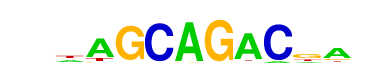

| p-value: | 1e-587 |
| log p-value: | -1.354e+03 |
| Information Content per bp: | 1.662 |
| Number of Target Sequences with motif | 1147.0 |
| Percentage of Target Sequences with motif | 7.54% |
| Number of Background Sequences with motif | 337.6 |
| Percentage of Background Sequences with motif | 1.01% |
| Average Position of motif in Targets | 38.4 +/- 17.2bp |
| Average Position of motif in Background | 49.5 +/- 32.9bp |
| Strand Bias (log2 ratio + to - strand density) | -0.3 |
| Multiplicity (# of sites on avg that occur together) | 1.03 |
| Motif File: | file (matrix) reverse opposite |
| Rank | Match Score | Redundant Motif | P-value | log P-value | % of Targets | % of Background | Motif file |
| 1 | 0.975 |  | 1e-569 | -1312.319613 | 8.40% | 1.35% | motif file (matrix) |
| 2 | 0.920 | 1e-420 | -969.283037 | 6.98% | 1.27% | motif file (matrix) | |
| 3 | 0.918 | 1e-398 | -918.585302 | 5.25% | 0.72% | motif file (matrix) | |
| 4 | 0.873 | 1e-339 | -781.793684 | 13.59% | 5.17% | motif file (matrix) | |
| 5 | 0.710 | 1e-318 | -733.117231 | 32.95% | 19.79% | motif file (matrix) | |
| 6 | 0.828 | 1e-175 | -403.433537 | 4.26% | 1.11% | motif file (matrix) | |
| 7 | 0.827 | 1e-154 | -355.518792 | 5.26% | 1.77% | motif file (matrix) | |
| 8 | 0.624 | 1e-38 | -89.130457 | 0.22% | 0.01% | motif file (matrix) | |
| 9 | 0.659 | 1e-10 | -23.362441 | 6.87% | 5.63% | motif file (matrix) |